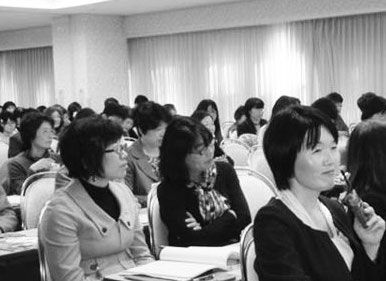
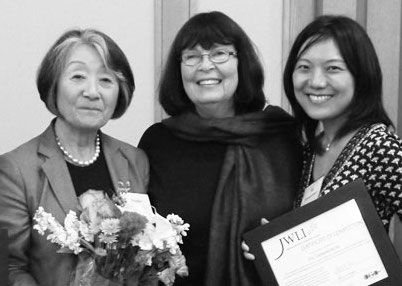
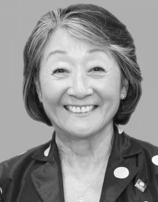
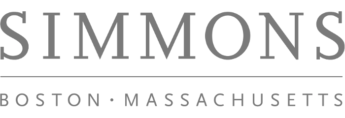

JWLI empowers Japanese women to become leaders and to make positive social change and innovation in Japan.
Develop leadership skills
and empower current and future generations of women leaders in Japan.
Foster more active participation
and empowerment of women in Japanese civil society.
Based in Boston, JWLI was founded in 2006 and offer four weeks of hands-on nonprofit management training with an entrepreneurial aspect.
Our History
The Japanese Women’s Leadership Initiative (JWLI) was founded in 2006 by three visionary women in Boston, Massachusetts: Atsuko Toko Fish, Mary Lassen, and Catherine Crone Coburn. JWLI brings emerging women leaders, referred to as the Fellows, from Japan to Boston to receive four weeks of hands-on experience and training with successful nonprofit organizations in nonprofit management and leadership development. During their stay in Boston, the Fellows will develop an Action Plan, which will serve as a step-by-step roadmap to make their dreams of social change a reality. After returning to Japan, the Fellows are expected to make a difference in their communities based on their Action Plans. The purpose of this program is for the fellows to share the knowledge and experience they acquired in Boston with other women and social sector leaders within Japan.
The Fish Family Foundation, operating in conjunction with other Boston-based nonprofit organizations, is administering JWLI in partnership with Simmons College School of Management’s Center for Gender in Organizations.
In 2010, thanks to the generous funding provided by the U.S. – Japan Foundation, JWLI expanded its vision to hold public forums within Japan. Held in 2010, 2012 and 2013, these public forums provided information about the nonprofit sector and the American approach to philanthropy with hopes to inspire women to take leadership roles. The Forum Program reached hundreds of Japanese citizens, advocating for their involvement in addressing the needs of Japanese society.

Photo Caption

Photo Caption
Who We Are

Atsuko Toko Fish - Founder
Atsuko Toko Fish retired as a U.S.-Japan cross-cultural consultant, and is currently involved with various social innovative movements as a philanthropist. She is also a founding trustee of the Fish Family Foundation. To accelerate social change by women leaders, Atsuko founded the Champion of Change Japan Award (CCJA) in 2017 and is launching the JWLI Bootcamp in June, 2019. In the wake of 3.11, Atsuko established the Japanese Disaster Relief Fund-Boston (JDRFB) to support immediate and mid-term recovery in Tohoku. Atsuko visited the effected region several times to assess and evaluate the fast-changing needs of the people and community. In the two years the fund was active for, JDRFB raised approximately $1 million and distributed 24 grants to 19 organizations and projects working directly in Tohoku. It has been reported by the grantees that JDRFB’s $1 million grants were leveraged for $6 million of economic impact.
Atsuko also served as a board chair of the Asian Task Force Against Domestic Violence (ATASK) for over 10 years, and a trustee of Simmons College. She was also a board member of The Boston Foundation (TBF), HANDS (Health and Development Service), the Japan Society of New York (JSNY), and Management Sciences of Health (MSH).
FISH FAMILY FOUNDATION
The Fish Family Foundation (the Foundation) is a private family foundation in Boston. The Foundation was established in 1999 to formalize the family’s tradition of responsibility to improve its community and to share the joyof giving with future generations. The Foundation currently focuses on aiding immigration, at-risk youth, and people struggling with mental health.

In 2007, the second year of JWLI, the Center for Gender in Organizations (CGO) at the Simmons School of Management in Boston became JWLI's institutional and academic partner. CGO was selected because of their unique expertise in areas pertaining to gender and leadership, its program located in the first business school in the world designed specifically for women, and expertise in the area of nonprofit management.